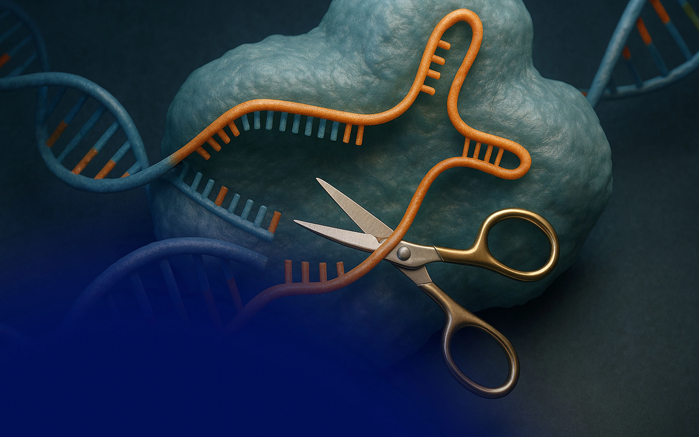

Що таке CRISPR-Cas-9

CRISPR-Cas9 — це революційна технологія редагування геному, яка дозволяє вченим змінювати ДНК організмів з безпрецедентною точністю. Абревіатура CRISPR розшифровується як Clustered Regularly Interspaced Short Palindromic Repeats (короткі паліндромні повтори, регулярно розташовані групами). Уявіть собі своєрідні молекулярні ножиці, за допомогою яких можна цілеспрямовано вирізати "помилки" в генетичному коді та вставляти правильні фрагменти.
Спочатку цей механізм був лише частиною природної імунної системи бактерій, якою вони захищалися від вірусів, проте сьогодні він перетворився на найпотужніший інструмент генної інженерії.
Історія винайдення
Шлях до створення цього інструменту зайняв не одне десятиліття і став результатом роботи багатьох дослідників з усього світу. Основні віхи цього відкриття:
- У 1993 році іспанський мікробіолог Франциско Мохіка вперше ідентифікував послідовності CRISPR у бактерій і припустив їхню роль у набутому імунітеті.
- У 2012 році Дженніфер Даудна та Еммануель Шарпантьє опублікували історичну статтю, де продемонстрували, що дану систему можна запрограмувати на розрізання будь-якої молекули ДНК.
- У 2020 році Даудна та Шарпантьє були удостоєні Нобелівської премії з хімії за розробку цього методу.
Механізм роботи
Механізм дії цих "генетичних ножиць" є високоточним. Процес редагування складається з кількох чітких етапів:
- Створення "гіда": Дослідники синтезують коротку молекулу РНК (sgRNA), яка комплементарна до ділянки ДНК, що підлягає модифікації.
- Пошук мішені: Ця гідова РНК об'єднується з ферментом Cas9. РНК виконує функцію навігатора, вказуючи ферменту точне місце розташування на спіралі ДНК.
- Розрізання: Після виявлення цільової ділянки фермент Cas9 здійснює дволанцюговий розрив молекули ДНК.
- Ремонт та редагування: Клітинні системи репарації розпізнають пошкодження та ініціюють процес його відновлення. На цьому етапі вчені мають змогу деактивувати певний ген або інтегрувати новий фрагмент ДНК, який клітина вбудує під час репарації.
Сучасні модифікації
Оригінальний білок Cas9 став лише першою ітерацією технології. На сьогоднішній день інженери-генетики розробили ряд нових варіацій ферменту, кожна з яких має вузьку спеціалізацію:
- Base Editors: Надають можливість замінювати лише одну нуклеотидну основу ДНК (наприклад, A на G) без здійснення дволанцюгового розриву спіралі. Цей підхід є значно безпечнішим для життєдіяльності клітини.
- Prime Editors: Функціонують за принципом "знайти та замінити" в текстовому процесорі. Дозволяють інтегрувати, видаляти або замінювати розширені ділянки ДНК з надвисокою точністю.
- Cas12a та Cas13: Фермент Cas12a формує "липкі кінці" під час розрізання (що оптимізує процес вставки нових генів), тоді як Cas13 спрямований на взаємодію з РНК, а не з ДНК, що забезпечує можливість тимчасової модуляції клітинних процесів.
Сучасні методи доставки
Синтез системи редагування є лише початковим етапом. Одним із головних викликів сучасної генної терапії залишається безпечна доставка комплексу CRISPR у цільові клітини пацієнта:
- Вірусні вектори: Використання модифікованих вірусів (наприклад, аденоасоційованих вірусів — AAV) для транспортування генетичного матеріалу. Метод вирізняється високою ефективністю, проте може провокувати імунну реакцію організму.
- Ліпідні наночастинки (LNP): Мікроскопічні ліпідні структури, що інкапсулюють компоненти CRISPR. Аналогічна технологія була успішно застосована при створенні мРНК-вакцин.
- Електропорація: Застосування короткочасних електричних імпульсів для формування тимчасових пор у клітинній мембрані. Переважно використовується в протоколах ex vivo (коли клітини вилучаються з організму, піддаються редагуванню в лабораторних умовах, після чого повертаються реципієнту).
Сучасні досягнення
Технологія CRISPR еволюціонувала з лабораторного концепту в медичний інструмент, здатний лікувати важкі захворювання.
У 2023 році регуляторні органи Великої Британії та США вперше у світі схвалили терапію на базі CRISPR під назвою Casgevy. Даний препарат призначений для радикального лікування серповидноклітинної анемії та бета-таласемії — важких спадкових захворювань крові.
Наразі тривають клінічні випробування щодо застосування CRISPR для терапії вродженої сліпоти, м'язової дистрофії, а також ряду онкологічних захворювань шляхом генетичного програмування імунних клітин пацієнта.